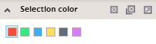
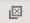
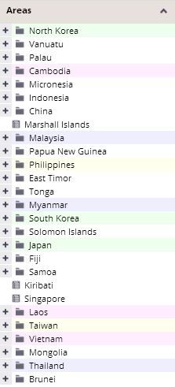
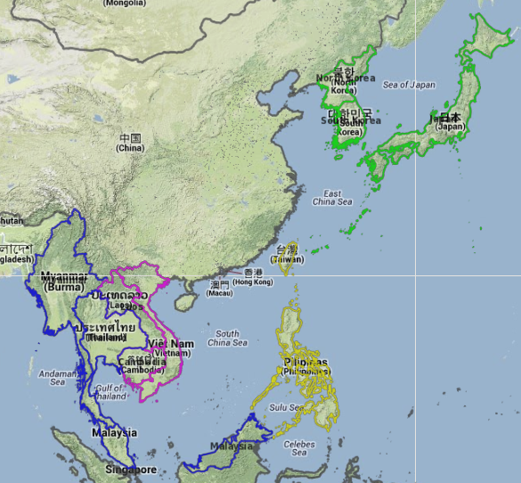
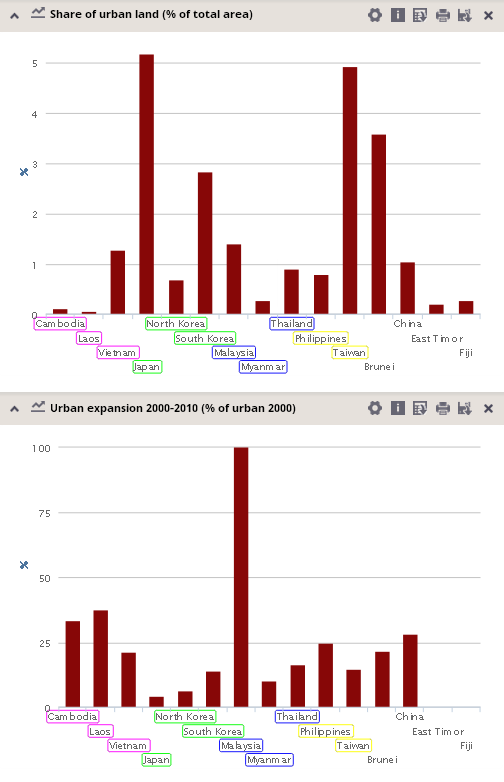

Multiple selections highlighted by color
This tool enables multiple selection of analytical units. You can make more different selections of analytical units and then compare them to each other. Each of these selections has different color, which is set in this color selection panel. All selected units for each color can be unselected again by clicking on the "Unselect" button in the panel. The color for the selection that should be canceled must be specified by pressing it in the panel.

To cancel all selections at the same time, press the "Unselect all" button .
Selected units are highlighted by corresponding selection colors in the hierarchical trees of units, in the maps and in all charts and tables in the visualization. Selected units are displayed first in charts.
  